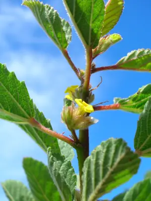

pranet · 出典付きの植物図鑑
uhaloa
Waltheria indica L. · Malvaceae

Waltheria indica is a species of flowering plant in the mallow family, Malvaceae, that has a pantropical distribution. It is believed to have originated in the Neotropics. Common names include sleepy morning, basora prieta, hierba de soldado, guimauve, mauve-gris, moto-branco, fulutafu, kafaki, and ʻuhaloa (Hawaii)(and in South Africa - "meidebossie"). W. indica is a short-lived subshrub or shrub, reaching a height of 2 m (6.6 ft) and a stem diameter of 2 cm (0.79 in). It is most common in dry, disturbed or well-drained, moist habitats. In Puerto Rico, it grows in areas that receive 750–1,800 mm (30–71 in) of annual rainfall and at elevations from sea level to more 400 m (1,300 ft).
出典: Wikipedia 英語版「Waltheria indica」 · CC BY-SA 4.0
異名: Waltheria africana Schumach. & Thonn., Waltheria americana L., Waltheria angustifolia L., Waltheria arborescens Cav., Waltheria corchorifolia Pers., Waltheria debilis Bojer, Waltheria elliptica Cav., Waltheria erioclada DC., Waltheria guineensis Schumach. & Thonn., Waltheria laxa Thulin, Waltheria makinoi Hayata, Waltheria martii Colla, Waltheria obtusa Willd. ex Steud., Waltheria paniculata Benth., Waltheria pauciflora Hochst. ex Mast., Waltheria pedunculata Willd. ex Steud., Waltheria prostrata K.Schum., Waltheria wildii Suess.
同定や利用は自己責任でお願いします。この図鑑だけを根拠に野生の植物を食べないでください。
出典
- 学名: World Flora Online Plant List 2026-06 · CC0 1.0
- 名前: Wikipedia の記事名と Wikidata · CC0 1.0（Wikidata）。記事名は事実
- 説明: Wikipedia 英語版「Waltheria indica」 · CC BY-SA 4.0
- 食用・毒性: World Checklist of Useful Plant Species (Diazgranados et al. 2020, RBG Kew) · CC BY 4.0
- 分布: World Checklist of Vascular Plants (WCVP), RBG Kew, version 2026-06-04 · CC BY 3.0
このページは pranet のデータから自動生成しています。コードは MIT、データは項目ごとのライセンス（説明）。